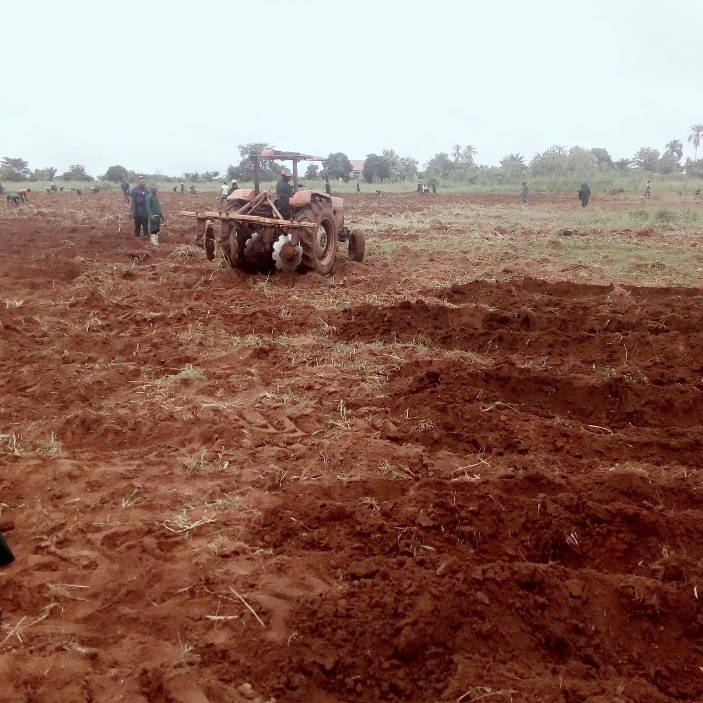
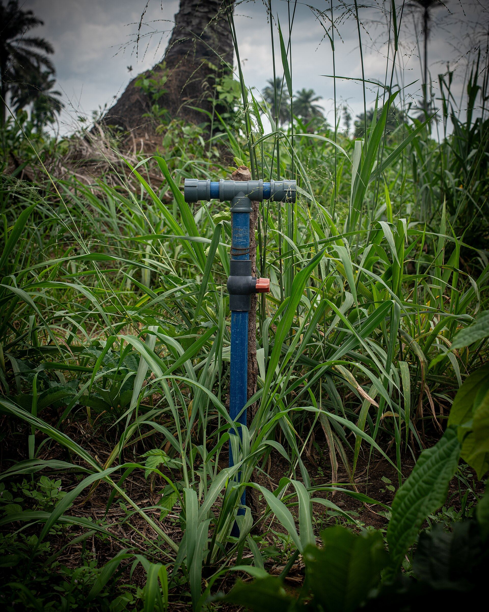
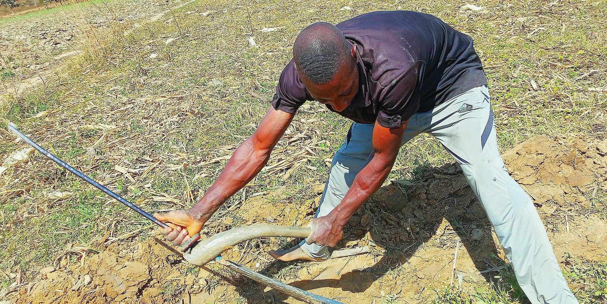

Growing Agriculture. Processing Opportunities. Building Sustainable Communities.
Jodozo Farms Ltd is an integrated agricultural and agro-allied company engaged in farming, livestock production, agro-processing, agricultural inputs, mechanised agriculture, equipment, water and irrigation, distribution, training and related agricultural services.
Our Core Services
From farm to market, we deliver complete agricultural solutions across the entire value chain.


Our Agricultural Value Chain
We manage the entire process — from production to your table.
An Integrated Agriculture, Agro-Processing & Agro-Allied Enterprise
Jodozo Farms Ltd is an integrated agricultural and agro-allied enterprise committed to food security, value addition and rural development. We combine modern farming techniques with innovative processing to create lasting value.
From crop and livestock production to agro-processing, inputs, equipment, water and irrigation — we create lasting value for farmers, communities and stakeholders.
Learn More About Us
Agricultural Inputs
Quality fertilizers, seeds, pesticides, herbicides, animal feeds and farm implements to boost productivity.
Explore Inputs
Equipment & Machinery
Tractors, harvesters, farm machinery, irrigation, cooling systems and more — sales, hire and servicing.
View Equipment
Water & Irrigation
Water production, packaging, distribution, irrigation systems, ponds, dams and water management.
Learn More
Featured Projects
Real impact. Sustainable growth. Across communities.

Partner With Jodozo
We welcome investors, farmers, suppliers, distributors and anyone who shares our vision for a more sustainable agricultural future.
Become a PartnerNews & Resources
Insights, company updates, farming tips and more.